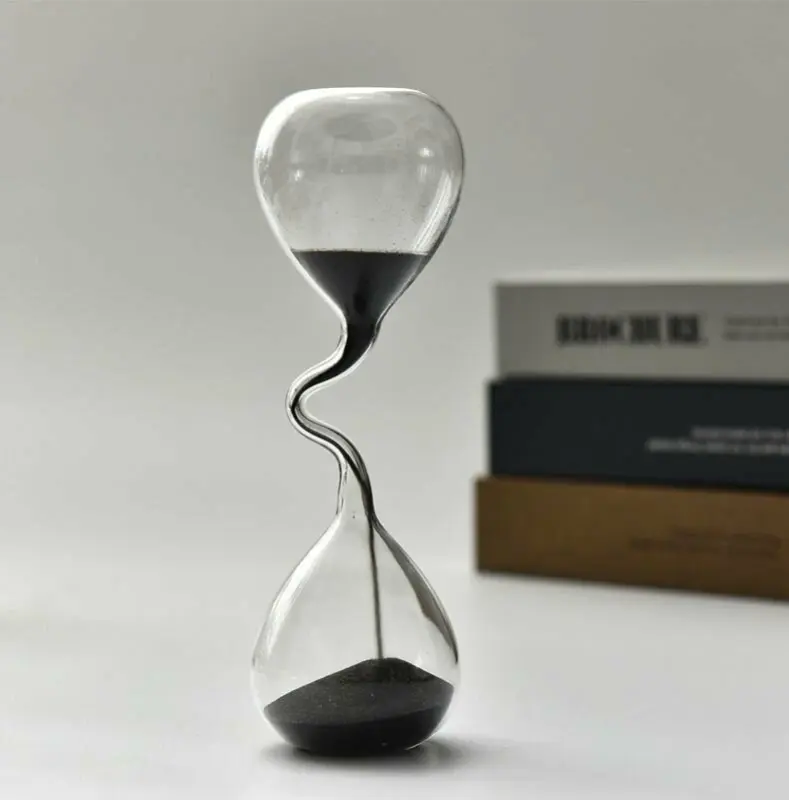

Вибухаючи замки в хмарах
І, знаєте, я не хочу грати за правилами.
Йти по тій лінії, по якій, ви думаєте я піду.
І ця частина почнеться з такого повороту керма, від якого ви всі прийдете в тихий жах.
І в міру розвитку ЖБО 7.0 слово тихий жах ще не раз спливе.
Я буду спростовувати святі істини і топтати їх ногами.
А потім спростовувати те, що залишилось від них.
Але це єдиний спосіб перемогти в грі, в якій переможців немає.
Переписати правила і вигадати свою гру.
Зухвало, так, що навколо всі будуть в шоці.
А саме, адже ви пам’ятаєте, що в першій частині ми говорили, що свободу від наркотиків отримає той, хто досягне або високої якості життя, або його аналога - високого духовного рівня, а краще й того, й другого.
Але скажіть - а СКІЛЬКИ треба отримати якості життя, щоб чоловічий організм позбавився бажання позбавлятися від надлишків сім’яної рідини з проміжком від трьох днів до п’ятнадцяти?
І, давайте чесно - цього рівня НЕМАЄ.
Якщо ви не чернець, що володіє прийомами кунфу, ви ніколи не зможете позбавити себе від потреби еякулювати раз на кілька днів.
Не допоможуть ні умовляння, ні дієти, ні мантри, ні робота на благо світу по двадцять годин на день.
Усе одно, вийми та положи раз на десять днів еякуляцію.
І хтось скаже!
Та я можу і десять, і двадцять, і сто днів не еякулювати.
Однак, гумор у тому, що середня людина вже через п’ятнадцять днів почне відчувати неспокій.
І цей неспокій буде достатньо стабільним і зростаючим.
Буквально почнеться те, що в народі називають спермототоксикозом.
А саме, станом, коли бонуси від відсутності еякуляцій, такі як бадьорість, енергійність, починають поступово перекриватися напругою від тривалого утримання.
І приблизно, приблизно на 20 день плюс мінус вже починається важкість від утримання сім’яної рідини в собі.
Яка переважує бадьорість від утримання.
І тому - давайте одразу поставимо собі ІДЕАЛЬНУ ціль.
Еталон - до якого будемо прагнути.
І провівши за десять років велику підготовчу роботу, я для себе його сформував.
І звучить він так - займатися сексом з однією жінкою, в ідеалі з дружиною, на такому рівні, щоб мене не турбував надлишок сім’яної рідини чи енергій, з нею пов’язаних, і при цьому РІДКО вдаватися до онанізму.
І тут, я думаю, у багатьох бомбануло жорстко.
З розряду - ти що, чмо, навіть НЕ ставиш собі цілі позбавитися від онанізму повністю?
І, скажу я вам - так.
Я такої цілі не ставлю, бо я дохрена досвідчений, у мене троє плюс дітей, і я прожив довгу історію сімейного і не лише життя.
І я знаю, що бувають вагітності, буває період відновлення після вагітності, буває період місячних, буває період гормональної ненависті до всього світу у жінок, хвороби, в кінці кінців - бувають сварки.
І будуть десятки і сотні випадків, коли зійдеться комбо.
З розряду - червоні дні, що перетікають у період люті, звідти в хворобу - і у тебе вже від надлишку сім’яної рідини почне рвати дах.
І НЕ допоможе тобі дружина ніяк в цьому, бо там стабільні лише зміни в жіночому настрої.
І якщо місяцями ти зможеш складати усе так, щоб раз так у сім - десять днів тобі таки перепадало, то місяць на п’ятий усе одно зійдуться зірки так, що то пронос, то золотуха, то відрядження.
І ти ТОЧНО не вивезеш.
Почне тебе підпирати, почнеш єрзати, дригатися.
І скажу страшне для любителів строгого утримання - підрочити буде КРАЩЕ, ніж триматися.
Дасть більше спокою, більше сімейної гармонії, щастя.
Ніж якщо ви будете вимагати сексу від дружини коли вітер відверто дує не в вашу сторону.
Це - перевірено часом.
А всі ідеали - нахрен.

Але хтось скаже - а що якщо я самотній як кущ агрусу в степу?
Які варіанти тоді є для мене?
І давайте одразу - саме по собі умова еякулювати раз етак днів так у десять буде й у вас.
Але оскільки у вас немає доступу до сексу, то онанізму у вас, на відміну від варіанту вище - буде в десять-двадцять-сто разів більше.
І тому ну НЕМАЄ тут нормальних розкладів, скажу чесно.
Адже якщо у випадку добре побудованих стосунків, коли ви можете ідеально закривати потреби дружини, а вона може ідеально закривати ваші потреби, від онанізму до онанізму можуть і по ФАКТУ проходити тижні, місяці і навіть роки, і це скоріше ПРИКОЛ, ніж проблема, у випадку якщо якість життя і духовний рівень скалить, то коли у вас немає дівчини від онанізму до онанізму проходять дні, кінець тижня.
І тому там ідеал зміщується взагалі в область вельми помірних цілей - займатися онанізмом за відсічкою. Раз на десять днів, скажімо.
І хтось скаже - без порнографії? Так? Щоб Куліджа не було, щоб усе пёрло неймовірно? Адже так.
І я б сказав, в теорії, звісно, так.
Але на практиці це недосяжний ідеал.
Та ну не буде ніхто займатися сексом без нічого, коли у нього в кроці сотні і тисячі жінок, які готові йому віддатися, та що там - вже віддаються.
Так, у віртуалі.
Але готові, та й віртуал нині в якості HD, дуже гідно, від реальності відмінності не принципові.
І міркуючи на цю тему я можу сказати - дрочити без порнографії - гроші на вітер.
Ніхто не буде так робити.
Так, мені підказували екзотичний варіант, і, можу припустити, він спрацює у деяких.
А саме - обрати собі одну порноактрису і зробити її своєю “дружиною”.
Тобто спати з нею і лише з нею, щоб не було ефекту Куліджа, великого гормонального інтересу, великих доз гормонів, що вбивають рецептори від появлення нового партнера.
Але скажу чесно - я думаю ви швидко перейдете межу, і зірветеся на саме мультисекс з новими партнерами.
Адже саме по собі життя без партнера - це і є те саме погане якість життя, важливий його аспект. Яке треба чимось “заїдати”. І онанізм під порнографію цілком підійде.
І виходячи з усього, що я сказав вище, для соло гравця ідеальним сценарієм буде просто не морочитися з усіма цими “без порно”, бо це не прокатить, як не прокатить обрати одну актрису.
А відсунути рівень онанізму до рівня фізіологічної потреби.
Плюс мінус довівши його до раз на сім - десять - дванадцять - п’ятнадцять днів.
І якнайшвидше, якщо у нього амбіція в цьому велика - знайти собі дружину.
І вже працювати по-нормальному, по-дорослому з онанізмом там.
Бо якщо ви часто займаєтеся онанізмом маючи дружину - то тут якраз і є проблема серйозного недоліку якості життя/якості духовного рівня.
З якою можна працювати.
А якщо ви займаєтеся онанізмом її не маючи - та не смішіть мої тапки.
Просто добейтеся скорочення числа актів онанізму до такого рівня, коли це вас не турбує.
І на цьому зупиніться.
Втім, хвилинка лайфхака.
А саме, попри те, що вище я говорив, що вже після 15 днів без еякуляцій мінуси від цього переважують плюси, є один варіант, коли це може спрацювати.
А саме - якщо ви самотні, вам буде корисним влаштовувати собі етакі бої.
Заходи в довгі періоди без еякуляцій, щоб в десятки разів підвищити собі мотивацію знайти подругу.
І це може спрацювати і ймовірніше всього спрацює.
Адже той, хто часто еякулює, в’ялий і немічний.
А коли ти себе занурив в дискомфорт - ти починаєш міркувати.
Та й жінки на тебе сбігаються.
Адже вони теж не дуже люблять хлопців в’ялих.
І дуже імпонують їм заряджені хлопці.
І тому, безумовно, як саме захід в дискомфорт заради того, щоб підсуетитися і знайти собі секс тире любов - це крута ідея.
Жити так постійно - немає ніякого сенсу.
Ніяких нервів і смислів не вистачить.
Але щоб поламати своє самотність - маст хев.
І я сам, відома історія, знайшов дружину, пішовши на три місяці в повне утримання.
Ламало мене знатно.
Але й мотивації було хоч відбавляй.
Хоча й знайшов її, не розшукуючи.
Друзі познайомили, і якщо ви скажете, що це було випадково - я майже впевнений, що ні.
Побуду трохи езотериком, і скажу так - всесвіт чує вашу потребу.
Але ви повинні її заявити.
Для чого триматися хоч іноді до рівня сильно хочеться.
Але, втім, хтось ще пам’ятає, навіщо ми тут зібралися?
А я пам’ятаю.
Ми тут, щоб поставити ідеал.
А він ЛИШЕ такий.
Знаходимо дружину і досягаємо такого рівня, при якому вдаємося до онанізму рідко.
Коли зірки особливо проти вас, коли вона не може вам допомогти, коли у вас на роботі усе жорстко розклеїлося.
Але наше завдання - досягти рівня несистематичного рідкого онанізму.
Коли вас запитають, а коли було останній раз у вас з порнушкою роман?
А ти згадати не можеш.
Так, було, але коли?
Тиждень, місяць тому?
Та хрен його знає.
Точно не вчора і точно рідко.
Ось реальний і досяжний рівень.
Не блаженний, не вигаданий, ні міфічний.
Стати таким онаністом - який не онаніст.
Який робить це рідко, і несистемно, раз на місяць, два, три.
Для збереження гармонії в сімейному житті, щоб не наполягати надмірно, щоб трохи заспокоїтися після особливо невдалих подій.
А якщо у вас немає ні дружини, ні дівчини - ну не позбавитеся ви від онанізму.
Ви навіть з нею від нього не позбавитеся саме в нуль, так, щоб ніколи.
А без неї тим більше.
І тому ваше завдання, глобально, просто підтискувати себе в ньому до рівня близьким до фізіологічної потреби, іноді йти на більш тривалі челенджі, але шукати, шукати, шукати жінку.
І хтось скаже - а як же ці чудові оповіді про люті ченців, які ніколи і ні з ким?
Або ті описи в красивих книгах, коли люди займалися сексом стільки разів, скільки у них було дітей?
І я згоден з вами - таке МОЖЛИВЕ.
Але можливе не для вас - ви розумієте це?
На цій землі були ну дуже різні часи.
І скоріше всього, були такі періоди, коли ми могли вмикати і вимикати статеву функцію по клацанню.
Не потрібна - натиснув вимкнув.
Потрібна - увімкнув.
І тоді так, усе, як у казці, натхненний ідеєю завести дітей - увімкнув, створив, вимкнув.
Але треба зрозуміти - це все реально НЕ в наш час і не для нас. Наші реалії - це еякуляція раз на десять/двадцять/тридцять днів БЕЗ альтернативи і без варіантів щось з цим зробити.
Ну й той самий чернець - так, він може не еякулювати.
Навчився повністю балансувати синтез і ресинтез сперми.
Але він чернець, ви це розумієте?
Він увесь день зайнятий медитацією, молитвою, роботою.
Не бігає по справах, йому не трахають мізки постачальники, він не ремонтує унітаз тещі, він не їсть смачної їжі, ні дивиться ютуб, за гроші не переживає, до шуму ступичного підшипника не прислуховується, діти не стрибають у нього на голові, дружина не вимагає ремонт, по вулицях навколо нього не подорожують напівголі дівчата.
І тому він може.
А ви ХРЕН коли це зможете.
Поки самі не станете чернецем.
Або, простіше кажучи - живеш громадянським життям - живи як громадянин.
Тобто прийми, що ти НЕ вивозиш і ніколи не вивезеш в рамках цього тіла.
Кожен раз від моменту чергової еякуляції вмикається таймер, і до того, як стукне тридцять днів ти еякулюєш знову.
В процесі чи сексу, в процесі чи онанізму - неважливо.
А якщо ні - то плата за це буде настільки висока, що краще б ти еякулював.
Бо з урахуванням, що ти не чернець, напруга буде рости і рости.
Змушуючи тебе дригатися і суєтитися.
І реальне завдання, до якого я раз за разом повертаюся - це досягти рівня, коли ви РІДКО займаєтеся онанізмом при наявності дружини.
Де рідко - залежить від різних факторів, аж до банальної удачі.
Може бути - рік пощастить протриматися.
А може бути - раз на пару тижнів буде.
Але рідко - цілком достатня ціль.
І ви запитаєте, до речі, а чому секс з дружиною не рахується ж то шкідливим? На відміну від онанізму?
І причини тут дві.
Багато фізичної роботи, яку ви прокручуєте по дорозі знижує ризик застоїв, проблем саме на рівні фізіології. Та й будемо чесні - ТАК затягувати в реальному сексі, як в перегляді порнографії, нереально абсолютно. Адже лише там можна дрочити годину, бо ти не можеш знайти цікавий тебе сюжет, а новий ніяк не знаходиться. Та й сидяча це робота, що суперечить всьому і вся.
Другий же момент у тому, що чим більш постійний у нас партнер, тим менше ми отримуємо від нього гормонів, які могли б вгасити наші рецептори. Це вам не під свіжу порнографію, вважай з купою нових партнерів. Це по суті отримання мінімуму гормонів, самої малості. Від якої взагалі нічого не просідає - ні рецептори, ні настрій, нічого. А з урахуванням скидання напруги від надлишку енергії у всіх статевих системах - ще й в прибуток виходиш.
І так, я розумію, що цією частиною я взагалі розбив всі ідеали всіх ідеалістів.
Які бігають і на їхніх знаменах написано - НУЛЬ онанізму.
І я вам чесно скажу - хреновий це гасло.
Ваше завдання, по факту - знайти дружину.
І досягти рівня мінімуму онанізму.
Чому не нуль?
Та з банальної причини.
Це НЕВИГІДНО.
З тієї причини, що ЗБИТКИ від того, коли ви перетримуєте терміни відсутності еякуляції вище вашого ліміту, скажімо, п’ятнадцяти днів, вище прибутку від самого утримання. І якщо по закінченні цього терміну у вас немає можливості зайнятися сексом, то найкращий варіант - підрочити і повернутися в норму. Поки ваш чайник не перекипів.
А по-друге, намагаючись досягнути нуля онанізму, ви будете наскакувати на дружину тоді, коли вона не готова, немає обставин, і в результаті зруйнуєте своє сімейне життя до основи. І заради відсутності онанізму, рідкого і несистемного втратите сім’ю. Що знову ж - невигідно.
І якщо ми з вами люди раціональні, і мислимо тверезо, то ми повинні визнати - онанізм буває вигідний і бажаний.
Адже вдавшись до нього ми втратимо МЕНШЕ, ніж уникаючи його.
І тоді, погодившись з цим положенням, ми граємо вже не як ті, хто знаєте лише команду повний вперед.
А як аси цієї гри.
Які вміють грати в режим повний вперед, але лише до рівня - поки це не стане невигідно.
І не боятися вдатися до онанізму тоді, коли вигідно до нього вдатися.
А такі ситуації були, є і будуть.
Причому будуть що в результаті варіанту є дружина, але зараз не час, наполегливість лише приведе до тріщин в сім’ї, а триматися вже не вигідно.
Що в ситуації зараз сам, протримався вже довго, напружує дико, дівчину знайти не зміг, скидаємо надлишковий еякулят і заходимо на другий, третій круг і так скільки потрібно.
І так, ця глава вийшла жорсткою і за нинішніми мірками революційною.
З нею спочатку будуть яростно сперечатися.
Потім вже частково погоджуватися.
А потім вона стане стандартом розумної людини.
Який, розуміючи дух епохи, який змушує його раз на кілька днів еякулювати, не буде заперечувати це чи відмовлятися це бачити.
А будувати своє життя навколо цього.
З повним розумінням того, що це станеться.
І раз це станеться, то, значить, треба облаштувати це ідеальним способом.
З коханою жінкою, яка отримує все, що їй потрібно, і дає вам все, що потрібно вам.
І лише рідко, дуже рідко, в режимі самозадоволення.
Коли зробити це вигідніше, ніж наполягати на сексуальному контакті.
Втрачаючи лише трохи бадьорості.
Але не втрачаючи ні сім’ю, ні стосунки.
І на цей момент - достатньо.
Ми повернемося до цієї теми ще не раз.
Поки що ж просто дайте їй відлежатися.
І не турбуйте зайвий раз.
І тут, можливо, найуважніший з вас скаже - ей, а перша частина НІЯК не пов’язана з другою.
Спокійно, дорогий друже.
Так і має бути.
Я вже попереджав вас - гра це дуже масштабна і забирає широко.
Усе заради перемоги.
І тому не дивуйтеся настільки шокуючим поворотам сюжету, що у вас буде легке здивування, як так, і чому автор зійшов з розуму.
Незабаром почне складатися.
Адже ми поступово збираємо величезний пазл.
Який заграє в кінці своїми фарбами.
І вже в наступній главі ви здивуєтеся тому, як поєднується неподільне.
Побачимося в наступній частині.
Просто перегорніть сторінку.